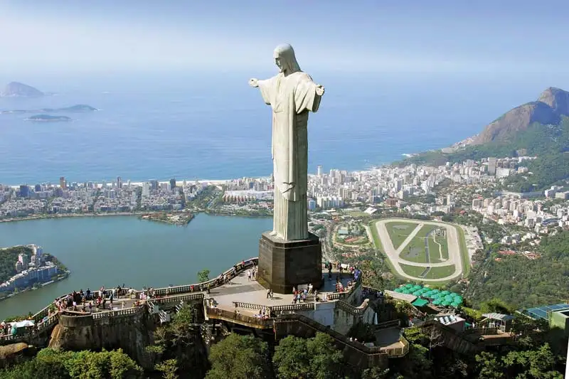
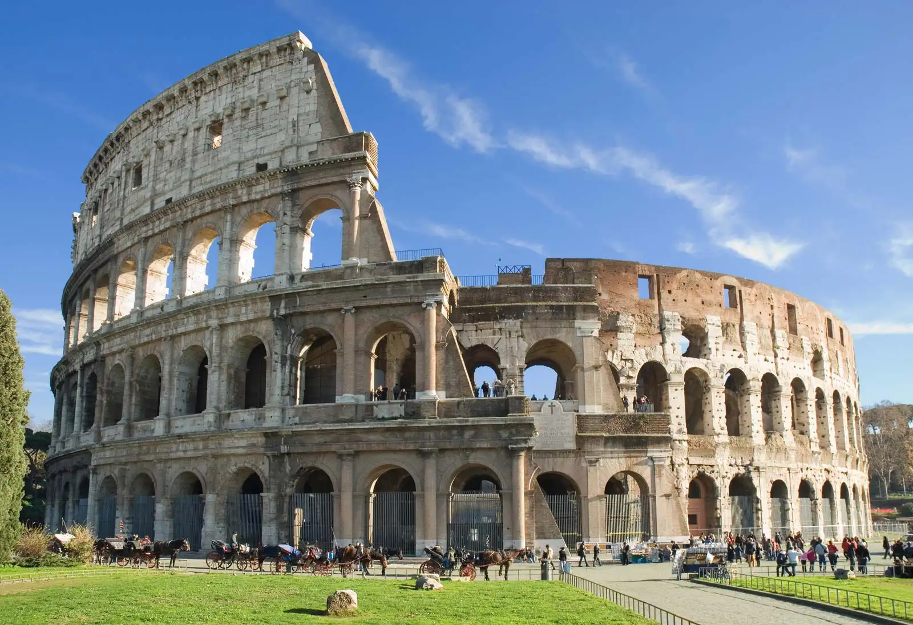

WONDERS OF THE WORLD
GREAT WALL OF CHINA
Great Wall of China, Chinese (Pinyin) Wanli Changcheng or (Wade-Giles romanization)
Wan-li Ch’ang-ch’eng (“10,000-Li Long Wall”), extensive bulwark erected in ancient China,
one of the largest building-construction projects ever undertaken. The Great Wall actually
consists of numerous walls—many of them parallel to each other—built over some two millennia
across northern China and southern Mongolia. The most extensive and best-preserved version of
the wall dates from the Ming dynasty (1368–1644) and runs for some 5,500 miles (8,850 km)
east to west from Mount Hu near Dandong, southeastern Liaoning province, to Jiayu Pass west
of Jiuquan, northwestern Gansu province. This wall often traces the crestlines of hills and
mountains as it snakes across the Chinese countryside, and about one-fourth of its length
consists solely of natural barriers such as rivers and mountain ridges. Nearly all of the
rest (about 70 percent of the total length) is actual constructed wall, with the small
remaining stretches constituting ditches or moats. Although lengthy sections of the wall
are now in ruins or have disappeared completely, it is still one of the more remarkable
structures on Earth. The Great Wall was designated a UNESCO World Heritage site in 1987.

TAJ MAHAL
The Taj Mahal is an ivory-white marble mausoleum on the right bank of the river
Yamuna in the Indian city of Agra. It was commissioned in 1632 by the Mughal emperor
Shah Jahan (r. 1628–1658) to house the tomb of his favourite wife, Mumtaz Mahal; it
also houses the tomb of Shah Jahan himself. The tomb is the centrepiece of a 17-hectare
(42-acre) complex, which includes a mosque and a guest house, and is set in formal gardens
bounded on three sides by a crenellated wall.Construction of the mausoleum was essentially
completed in 1643, but work continued on other phases of the project for another 10 years.
The Taj Mahal complex is believed to have been completed in its entirety in 1653 at a cost
estimated at the time to be around ₹32 million, which in 2020 would be approximately
₹70 billion (about U.S. $1 billion). The construction project employed some 20,000
artisans under the guidance of a board of architects led by the court architect to the
emperor, Ustad Ahmad Lahauri.The Taj Mahal was designated as a UNESCO World Heritage Site
in 1983 for being "the jewel of Muslim art in India and one of the universally admired
masterpieces of the world's heritage". It is regarded by many as the best example of
Mughal architecture and a symbol of India's rich history. The Taj Mahal attracts 7–8 million
visitors a year and in 2007, it was declared a winner of the New 7 Wonders of the World
(2000–2007) initiative.

CHRIST THE REDEEMER
Christ the Redeemer, a colossal statue of Jesus, stands atop Mount Corcovado in Rio de
Janeiro. Its origins date to just after World War I, when some Brazilians feared a “tide
of godlessness.” They proposed a statue, which was ultimately designed by Heitor da Silva
Costa, Carlos Oswald, and Paul Landowski. Construction began in 1926 and was completed
five years later. The resulting monument stands 98 feet (30 meters) tall—not including
its base, which is about 26 feet (8 meters) high—and its outstretched arms span 92 feet
(28 meters). It is the largest Art Deco sculpture in the world. Christ the Redeemer is made
of reinforced concrete and is covered in approximately six million tiles. Somewhat
disconcertingly, the statue has often been struck by lightning, and in 2014 the tip of
Jesus’s right thumb was damaged during a storm.

COLOSSEUM
The Colosseum in Rome was built in the first century by order of the Emperor Vespasian.
A feat of engineering, the amphitheater measures 620 by 513 feet (189 by 156 meters)
and features a complex system of vaults. It was capable of holding 50,000 spectators,
who watched a variety of events. Perhaps most notable were gladiator fights, though
men battling animals was also common. In addition, water was sometimes pumped into
the Colosseum for mock naval engagements. However, the belief that Christians were
martyred there—namely, by being thrown to lions—is debated. According to some estimates,
about 500,000 people died in the Colosseum. Additionally, so many animals were captured
and then killed there that certain species reportedly became extinct.

MACHU PICCHU
This Incan site near Cuzco, Peru, was “discovered” in 1911 by Hiram Bingham, who
believed it was Vilcabamba, a secret Incan stronghold used during the 16th-century rebellion
against Spanish rule. Although that claim was later disproved, the purpose of Machu Picchu
has confounded scholars. Bingham believed it was home to the “Virgins of the Sun,” women
who lived in convents under a vow of chastity. Others think that it was likely a pilgrimage
site, while some believe it was a royal retreat. (One thing it apparently should not be is
the site of a beer commercial. In 2000 a crane being used for such an ad fell and cracked
a monument.) What is known is that Machu Picchu is one of the few major pre-Columbian ruins
found nearly intact. Despite its relative isolation high in the Andes Mountains, it features
agricultural terraces, plazas, residential areas, and temples.
PETRA
The ancient city of Petra, Jordan, is located in a remote valley, nestled among sandstone
mountains and cliffs. It was purported to be one of the places where Moses struck a rock
and water gushed forth. Later the Nabataeans, an Arab tribe, made it their capital, and
during this time it flourished, becoming an important trade center, especially for spices.
Noted carvers, the Nabataeans chiseled dwellings, temples, and tombs into the sandstone,
which changed color with the shifting sun. In addition, they constructed a water system that
allowed for lush gardens and farming. At its height, Petra reportedly had a population
of 30,000. The city began to decline, however, as trade routes shifted. A major earthquake
in 363 CE caused more difficulty, and after another tremor hit in 551, Petra was gradually
abandoned. Although rediscovered in 1912, it was largely ignored by archaeologists until
the late 20th century, and many questions remain about the city.

CHICHEN ITZA
Chichén Itzá is a Mayan city on the Yucatán Peninsula in Mexico, which flourished in the 9th
and 10th centuries CE. Under the Mayan tribe Itzá—who were strongly influenced by the
Toltecs—a number of important monuments and temples were built. Among the most notable is
the stepped pyramid El Castillo (“The Castle”), which rises 79 feet (24 meters) above the
Main Plaza. A testament to the Mayans’ astronomical abilities, the structure features a
total of 365 steps, the number of days in the solar year. During the spring and autumnal
equinoxes, the setting sun casts shadows on the pyramid that give the appearance of a
serpent slithering down the north stairway; at the base is a stone snake head. Life there
was not all work and science, however. Chichén Itzá is home to the largest tlachtli (a type
of sporting field) in the Americas. On that field the residents played a ritual ball game
popular throughout pre-Columbian Mesoamerica.